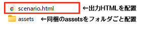

PL情報
{PC苗字}{PC名前}の自宅に届いた招待状。
それは、知人のフルート奏者の誕生パーティー開催を知らせるものだった。
そうして{NPC苗字}{NPC名前}とともに訪れた孤島の洋館は、台風の来訪で外界と閉ざされることとなる。
探偵、隠し財産の噂に、島に伝わるわらべ歌。
何も起きないはずもなく。
果たして、聴こえた不気味なフルートの音色が誘う先は……。
という感じで使えます。
これは何？
これはシナリオHTMLのテンプレート、及び、テキストをもとにHTMLを生成してくれる補助ツールです。
よろしければご活用ください。
システムはクトゥルフ神話TRPGを想定していますが、用語などを変更いただくことで他のシステムのシナリオにも使用できます。
▼以下のサンプルサイトで挙動をご確認いただけます。
https://jxsnwk.github.io/templates_002/
▼生成ツールはこちらで挙動をご確認いただけます。
https://jxsnwk.github.io/templates_002/generator.html
※動作確認用テキストをシナリオHTML生成ツールに貼り付けることで、サンプル生成プレビュー可能です。
利用規約の詳細はこちらをご覧ください。
シナリオHTMLファイル配布時の注意点
生成＆ダウンロードしたシナリオHTMLファイル単体だと、スタイル等が適用されません。
1. 貴方の配布予定のフォルダ内に、ダウンロードしたシナリオHTMLを配置して、
2. 同じフォルダに同梱のassetsを丸ごと移動orコピーするようにしてください。
最終的に、配布したいHTMLがassetsフォルダのある場所と同階層に置かれていたらOKです。

テキスト表示例
本文はこのように表示されます。
本文本文本文本文本文本文本文本文本文本文
本文本文本文本文本文本文本文本文本文本文本文本文本文本文本文本文本文本文本文本文本文本文本文本文本文本文本文本文本文本文本文本文本文本文本文本文本文本文本文本文
その他装飾は以下の通りです。
太字 下線 漢字 アイコン
装飾テキスト 装飾テキスト 装飾テキスト
脚注[1]
脚注の数字は自動で採番されます。オンマウス[2]で脚注が表示されます。
脚注定義は次のように書くことで表示されます。
[1]： 脚注定義に書いた、ID対応する脚注が表示されます。[2]： ある程度長々書くと表示時に改行されます。本文本文本文本文本文本文本文本文本文本文。本文本文。
リスト/リンク
- リスト
-
リスト
- リスト
- リスト
- チェックリスト
- チェックリスト
- チェックリスト
アンカーの設置はこんなかんじで書きます。
URLリンク
https://jxsn-wk.booth.pm/items/7900600
別窓で開きます。
アンカーリンク
いわゆるページ内遷移のリンクです。「#」始まりかどうかで判断しています。
画像
こんな感じで表示できます。
画像ファイルはassets/img下に配置した上で、ファイル名を指定して使用します。
装飾BOX系/テーブル
装飾BOX
本文本文本文本文
成功：
床の色が一部異なることに気付く。地下への隠し扉があるようだ。
失敗：
腐食した床に足を取られ、そのまま転倒してしまう。負傷により耐久力-1d3。
床下にはスペースがあり、どうやら地下室が広がっているようだ。
ワンクリックコピペ装飾BOX
本文本文本文本文
本文本文本文本文
折り畳みBOX
折り畳みBOX1 見出し
本文本文本文本文
折り畳みBOX2 見出し
本文本文本文本文
装飾カード/テーブル
装飾カード
「ラベル: 値」で各項目を記述できます。
テーブル
ヘッダー行は末尾に「h」、セル強調は冒頭に「~」をつけることで装飾できます。
| ヘッダー | ヘッダー | ヘッダー |
|---|---|---|
| セル | セル | セル |
| セル強調 | セル | セル |
| セル | セル | セル |
| セル | セル | セル |
見出し
見出しは以下のように装飾されます。
見出し1
見出し2
見出し3
見出し4
見出し5
「目次自動採番」にチェックを入れると、見出しから自動で目次を生成することができます。
目次作成時、どこまで階層を記述するかはプルダウン選択で設定します。
おまけ
クトゥルフ神話TRPGシナリオ用の権利表示タグ
本文の文字数をなんとなくカウントして表示するタグ
アイコンまとめ
末尾の「b」を「w」に変更すると白線になります。
アイコンのデザインは700+ CSS Iconsからお借りしています。
大元はcssで設定しているものなので、cssを変更・追記することでアイコンを追加することも可能です。
利用規約
これはTRPGのシナリオ配布用HTML形式テンプレート及びHTML生成ツールです。
クトゥルフ神話TRPGシナリオでの使用を想定していますが、用語等を変更することで他のシステムにもご利用いただけます。
それ以外の用途にも、以下「NG 禁止事項」に反しない限り、ご利用いただけます。
本テンプレートは、HTML形式のシナリオ配布がもっとお気軽にできるようになるといいなあ、の考えのもと作られています。
プログラム知識の少ない人間の作った拙いものですので、色々とお目こぼしいただけますと幸いです。
質問や不明点は X(旧Twitter)：@Jxsn_wk までお問い合わせください。
NG 禁止事項
- 本テンプレート及びツールの自作発言
- 配布ファイルそのままの形での公開及び配布（無償/有償問わず）
- 法律に違反することに関連した利用
OK 許可していること
-
本配布物を利用した【シナリオ】の公開及び配布
- 無償/有償問わず
- 改変した場合を含む
- 既存のHTMLファイルに一部利用した場合を含む
-
本配布物を改変・一部利用した【テンプレートやツール】の公開及び配布
- 無償/有償問わず
- 改変・一部利用の程度の大小を問わず
"Template by Jaxson"の削除について
- 【シナリオ】の公開及び頒布の場合、削除してもよい
-
【テンプレートやツール】の公開及び配布の場合、以下の条件を満たしていれば削除してもよい
- 配布物内(READMEなど)に本テンプレートの配布元URLが記載されていること
更新履歴
2026/01/26 【ver.1.0.0】作成